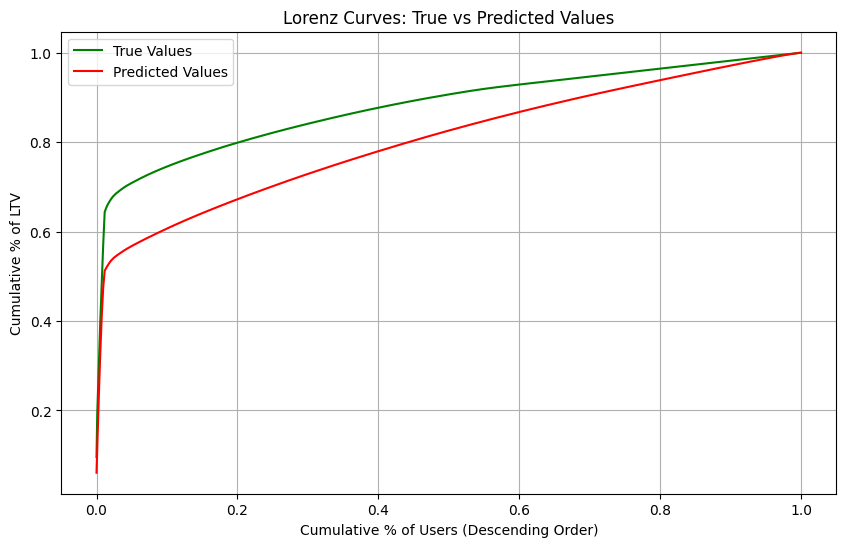

Deep Learning for Customer Lifetime Value
Author: Praveen Hosdrug
Date created: 2024/11/23
Last modified: 2024/11/27
Description: A hybrid deep learning architecture for predicting customer purchase patterns and lifetime value.

Introduction
A hybrid deep learning architecture combining Transformer encoders and LSTM networks for predicting customer purchase patterns and lifetime value using transaction history. While many existing review articles focus on classic parametric models and traditional machine learning algorithms ,this implementation leverages recent advancements in Transformer-based models for time series prediction. The approach handles multi-granularity prediction across different temporal scales.
Setting up Libraries for the Deep Learning Project
import subprocess
def install_packages(packages):
"""
Install a list of packages using pip.
Args:
packages (list): A list of package names to install.
"""
for package in packages:
subprocess.run(["pip", "install", package], check=True)
List of Packages to Install
- uciml: For the purpose of the tutorial; we will be using the UK Retail Dataset
- keras_hub: Access to the transformer encoder layer.
packages_to_install = ["ucimlrepo", "keras_hub"]
# Install the packages
install_packages(packages_to_install)
# Core data processing and numerical libraries
import os
os.environ["KERAS_BACKEND"] = "jax"
import keras
import numpy as np
import pandas as pd
from typing import Dict
# Visualization
import matplotlib.pyplot as plt
# Keras imports
from keras import layers
from keras import Model
from keras import ops
from keras_hub.layers import TransformerEncoder
from keras import regularizers
# UK Retail Dataset
from ucimlrepo import fetch_ucirepo
Preprocessing the UK Retail dataset
def prepare_time_series_data(data):
"""
Preprocess retail transaction data for deep learning.
Args:
data: Raw transaction data containing InvoiceDate, UnitPrice, etc.
Returns:
Processed DataFrame with calculated features
"""
processed_data = data.copy()
# Essential datetime handling for temporal ordering
processed_data["InvoiceDate"] = pd.to_datetime(processed_data["InvoiceDate"])
# Basic business constraints and calculations
processed_data = processed_data[processed_data["UnitPrice"] > 0]
processed_data["Amount"] = processed_data["UnitPrice"] * processed_data["Quantity"]
processed_data["CustomerID"] = processed_data["CustomerID"].fillna(99999.0)
# Handle outliers in Amount using statistical thresholds
q1 = processed_data["Amount"].quantile(0.25)
q3 = processed_data["Amount"].quantile(0.75)
# Define bounds - using 1.5 IQR rule
lower_bound = q1 - 1.5 * (q3 - q1)
upper_bound = q3 + 1.5 * (q3 - q1)
# Filter outliers
processed_data = processed_data[
(processed_data["Amount"] >= lower_bound)
& (processed_data["Amount"] <= upper_bound)
]
return processed_data
# Load Data
online_retail = fetch_ucirepo(id=352)
raw_data = online_retail.data.features
transformed_data = prepare_time_series_data(raw_data)
def prepare_data_for_modeling(
df: pd.DataFrame,
input_sequence_length: int = 6,
output_sequence_length: int = 6,
) -> Dict:
"""
Transform retail data into sequence-to-sequence format with separate
temporal and trend components.
"""
df = df.copy()
# Daily aggregation
daily_purchases = (
df.groupby(["CustomerID", pd.Grouper(key="InvoiceDate", freq="D")])
.agg({"Amount": "sum", "Quantity": "sum", "Country": "first"})
.reset_index()
)
daily_purchases["frequency"] = np.where(daily_purchases["Amount"] > 0, 1, 0)
# Monthly resampling
monthly_purchases = (
daily_purchases.set_index("InvoiceDate")
.groupby("CustomerID")
.resample("M")
.agg(
{"Amount": "sum", "Quantity": "sum", "frequency": "sum", "Country": "first"}
)
.reset_index()
)
# Add cyclical temporal features
def prepare_temporal_features(input_window: pd.DataFrame) -> np.ndarray:
month = input_window["InvoiceDate"].dt.month
month_sin = np.sin(2 * np.pi * month / 12)
month_cos = np.cos(2 * np.pi * month / 12)
is_quarter_start = (month % 3 == 1).astype(int)
temporal_features = np.column_stack(
[
month,
input_window["InvoiceDate"].dt.year,
month_sin,
month_cos,
is_quarter_start,
]
)
return temporal_features
# Prepare trend features with lagged values
def prepare_trend_features(input_window: pd.DataFrame, lag: int = 3) -> np.ndarray:
lagged_data = pd.DataFrame()
for i in range(1, lag + 1):
lagged_data[f"Amount_lag_{i}"] = input_window["Amount"].shift(i)
lagged_data[f"Quantity_lag_{i}"] = input_window["Quantity"].shift(i)
lagged_data[f"frequency_lag_{i}"] = input_window["frequency"].shift(i)
lagged_data = lagged_data.fillna(0)
trend_features = np.column_stack(
[
input_window["Amount"].values,
input_window["Quantity"].values,
input_window["frequency"].values,
lagged_data.values,
]
)
return trend_features
sequence_containers = {
"temporal_sequences": [],
"trend_sequences": [],
"static_features": [],
"output_sequences": [],
}
# Process sequences for each customer
for customer_id, customer_data in monthly_purchases.groupby("CustomerID"):
customer_data = customer_data.sort_values("InvoiceDate")
sequence_ranges = (
len(customer_data) - input_sequence_length - output_sequence_length + 1
)
country = customer_data["Country"].iloc[0]
for i in range(sequence_ranges):
input_window = customer_data.iloc[i : i + input_sequence_length]
output_window = customer_data.iloc[
i
+ input_sequence_length : i
+ input_sequence_length
+ output_sequence_length
]
if (
len(input_window) == input_sequence_length
and len(output_window) == output_sequence_length
):
temporal_features = prepare_temporal_features(input_window)
trend_features = prepare_trend_features(input_window)
sequence_containers["temporal_sequences"].append(temporal_features)
sequence_containers["trend_sequences"].append(trend_features)
sequence_containers["static_features"].append(country)
sequence_containers["output_sequences"].append(
output_window["Amount"].values
)
return {
"temporal_sequences": (
np.array(sequence_containers["temporal_sequences"], dtype=np.float32)
),
"trend_sequences": (
np.array(sequence_containers["trend_sequences"], dtype=np.float32)
),
"static_features": np.array(sequence_containers["static_features"]),
"output_sequences": (
np.array(sequence_containers["output_sequences"], dtype=np.float32)
),
}
# Transform data with input and output sequences into a Output dictionary
output = prepare_data_for_modeling(
df=transformed_data, input_sequence_length=6, output_sequence_length=6
)
/var/folders/28/qvxw5wfs4b7gzvxt7_xp20640000gn/T/ipykernel_26202/277084066.py:66: FutureWarning: 'M' is deprecated and will be removed in a future version, please use 'ME' instead.
daily_purchases.set_index("InvoiceDate")
Scaling and Splitting
def robust_scale(data):
"""
Min-Max scaling function since standard deviation is high.
"""
data = np.array(data)
data_min = np.min(data)
data_max = np.max(data)
scaled = (data - data_min) / (data_max - data_min)
return scaled
def create_temporal_splits_with_scaling(
prepared_data: Dict[str, np.ndarray],
test_ratio: float = 0.2,
val_ratio: float = 0.2,
):
total_sequences = len(prepared_data["trend_sequences"])
# Calculate split points
test_size = int(total_sequences * test_ratio)
val_size = int(total_sequences * val_ratio)
train_size = total_sequences - (test_size + val_size)
# Scale trend sequences
trend_shape = prepared_data["trend_sequences"].shape
scaled_trends = np.zeros_like(prepared_data["trend_sequences"])
# Scale each feature independently
for i in range(trend_shape[-1]):
scaled_trends[..., i] = robust_scale(prepared_data["trend_sequences"][..., i])
# Scale output sequences
scaled_outputs = robust_scale(prepared_data["output_sequences"])
# Create splits
train_data = {
"trend_sequences": scaled_trends[:train_size],
"temporal_sequences": prepared_data["temporal_sequences"][:train_size],
"static_features": prepared_data["static_features"][:train_size],
"output_sequences": scaled_outputs[:train_size],
}
val_data = {
"trend_sequences": scaled_trends[train_size : train_size + val_size],
"temporal_sequences": prepared_data["temporal_sequences"][
train_size : train_size + val_size
],
"static_features": prepared_data["static_features"][
train_size : train_size + val_size
],
"output_sequences": scaled_outputs[train_size : train_size + val_size],
}
test_data = {
"trend_sequences": scaled_trends[train_size + val_size :],
"temporal_sequences": prepared_data["temporal_sequences"][
train_size + val_size :
],
"static_features": prepared_data["static_features"][train_size + val_size :],
"output_sequences": scaled_outputs[train_size + val_size :],
}
return train_data, val_data, test_data
# Usage
train_data, val_data, test_data = create_temporal_splits_with_scaling(output)
Evaluation
def calculate_metrics(y_true, y_pred):
"""
Calculates RMSE, MAE and R²
"""
# Convert inputs to "float32"
y_true = ops.cast(y_true, dtype="float32")
y_pred = ops.cast(y_pred, dtype="float32")
# RMSE
rmse = np.sqrt(np.mean(np.square(y_true - y_pred)))
# R² (coefficient of determination)
ss_res = np.sum(np.square(y_true - y_pred))
ss_tot = np.sum(np.square(y_true - np.mean(y_true)))
r2 = 1 - (ss_res / ss_tot)
return {"mae": np.mean(np.abs(y_true - y_pred)), "rmse": rmse, "r2": r2}
def plot_lorenz_analysis(y_true, y_pred):
"""
Plots Lorenz curves to show distribution of high and low value users
"""
# Convert to numpy arrays and flatten
y_true = np.array(y_true).flatten()
y_pred = np.array(y_pred).flatten()
# Sort values in descending order (for high-value users analysis)
true_sorted = np.sort(-y_true)
pred_sorted = np.sort(-y_pred)
# Calculate cumulative sums
true_cumsum = np.cumsum(true_sorted)
pred_cumsum = np.cumsum(pred_sorted)
# Normalize to percentages
true_cumsum_pct = true_cumsum / true_cumsum[-1]
pred_cumsum_pct = pred_cumsum / pred_cumsum[-1]
# Generate percentiles for x-axis
percentiles = np.linspace(0, 1, len(y_true))
# Calculate Mutual Gini (area between curves)
mutual_gini = np.abs(
np.trapz(true_cumsum_pct, percentiles) - np.trapz(pred_cumsum_pct, percentiles)
)
# Create plot
plt.figure(figsize=(10, 6))
plt.plot(percentiles, true_cumsum_pct, "g-", label="True Values")
plt.plot(percentiles, pred_cumsum_pct, "r-", label="Predicted Values")
plt.xlabel("Cumulative % of Users (Descending Order)")
plt.ylabel("Cumulative % of LTV")
plt.title("Lorenz Curves: True vs Predicted Values")
plt.legend()
plt.grid(True)
print(f"\nMutual Gini: {mutual_gini:.4f} (lower is better)")
plt.show()
return mutual_gini
Hybrid Transformer / LSTM model architecture
The hybrid nature of this model is particularly significant because it combines RNN's ability to handle sequential data with Transformer's attention mechanisms for capturing global patterns across countries and seasonality.
def build_hybrid_model(
input_sequence_length: int,
output_sequence_length: int,
num_countries: int,
d_model: int = 8,
num_heads: int = 4,
):
keras.utils.set_random_seed(seed=42)
# Inputs
temporal_inputs = layers.Input(
shape=(input_sequence_length, 5), name="temporal_inputs"
)
trend_inputs = layers.Input(shape=(input_sequence_length, 12), name="trend_inputs")
country_inputs = layers.Input(
shape=(num_countries,), dtype="int32", name="country_inputs"
)
# Process country features
country_embedding = layers.Embedding(
input_dim=num_countries,
output_dim=d_model,
mask_zero=False,
name="country_embedding",
)(
country_inputs
) # Output shape: (batch_size, 1, d_model)
# Flatten the embedding output
country_embedding = layers.Flatten(name="flatten_country_embedding")(
country_embedding
)
# Repeat the country embedding across timesteps
country_embedding_repeated = layers.RepeatVector(
input_sequence_length, name="repeat_country_embedding"
)(country_embedding)
# Projection of temporal inputs to match Transformer dimensions
temporal_projection = layers.Dense(
d_model, activation="tanh", name="temporal_projection"
)(temporal_inputs)
# Combine all features
combined_features = layers.Concatenate()(
[temporal_projection, country_embedding_repeated]
)
transformer_output = combined_features
for _ in range(3):
transformer_output = TransformerEncoder(
intermediate_dim=16, num_heads=num_heads
)(transformer_output)
lstm_output = layers.LSTM(units=64, name="lstm_trend")(trend_inputs)
transformer_flattened = layers.GlobalAveragePooling1D(name="flatten_transformer")(
transformer_output
)
transformer_flattened = layers.Dense(1, activation="sigmoid")(transformer_flattened)
# Concatenate flattened Transformer output with LSTM output
merged_features = layers.Concatenate(name="concatenate_transformer_lstm")(
[transformer_flattened, lstm_output]
)
# Repeat the merged features to match the output sequence length
decoder_initial = layers.RepeatVector(
output_sequence_length, name="repeat_merged_features"
)(merged_features)
decoder_lstm = layers.LSTM(
units=64,
return_sequences=True,
recurrent_regularizer=regularizers.L1L2(l1=1e-5, l2=1e-4),
)(decoder_initial)
# Output Dense layer
output = layers.Dense(units=1, activation="linear", name="output_dense")(
decoder_lstm
)
model = Model(
inputs=[temporal_inputs, trend_inputs, country_inputs], outputs=output
)
model.compile(
optimizer=keras.optimizers.Adam(learning_rate=0.001),
loss="mse",
metrics=["mse"],
)
return model
# Create the hybrid model
model = build_hybrid_model(
input_sequence_length=6,
output_sequence_length=6,
num_countries=len(np.unique(train_data["static_features"])) + 1,
d_model=8,
num_heads=4,
)
# Configure StringLookup
label_encoder = layers.StringLookup(output_mode="one_hot", num_oov_indices=1)
# Adapt and encode
label_encoder.adapt(train_data["static_features"])
train_static_encoded = label_encoder(train_data["static_features"])
val_static_encoded = label_encoder(val_data["static_features"])
test_static_encoded = label_encoder(test_data["static_features"])
# Convert sequences with proper type casting
x_train_seq = np.asarray(train_data["trend_sequences"]).astype(np.float32)
x_val_seq = np.asarray(val_data["trend_sequences"]).astype(np.float32)
x_train_temporal = np.asarray(train_data["temporal_sequences"]).astype(np.float32)
x_val_temporal = np.asarray(val_data["temporal_sequences"]).astype(np.float32)
train_outputs = np.asarray(train_data["output_sequences"]).astype(np.float32)
val_outputs = np.asarray(val_data["output_sequences"]).astype(np.float32)
test_output = np.asarray(test_data["output_sequences"]).astype(np.float32)
# Training setup
keras.utils.set_random_seed(seed=42)
history = model.fit(
[x_train_temporal, x_train_seq, train_static_encoded],
train_outputs,
validation_data=(
[x_val_temporal, x_val_seq, val_static_encoded],
val_data["output_sequences"].astype(np.float32),
),
epochs=20,
batch_size=30,
)
# Make predictions
predictions = model.predict(
[
test_data["temporal_sequences"].astype(np.float32),
test_data["trend_sequences"].astype(np.float32),
test_static_encoded,
]
)
# Calculate the predictions
predictions = np.squeeze(predictions)
# Calculate basic metrics
hybrid_metrics = calculate_metrics(test_data["output_sequences"], predictions)
# Plot Lorenz curves and get Mutual Gini
hybrid_mutual_gini = plot_lorenz_analysis(test_data["output_sequences"], predictions)
Mutual Gini: 0.0759 (lower is better)
/var/folders/28/qvxw5wfs4b7gzvxt7_xp20640000gn/T/ipykernel_26202/1632064435.py:45: DeprecationWarning: `trapz` is deprecated. Use `trapezoid` instead, or one of the numerical integration functions in `scipy.integrate`.
np.trapz(true_cumsum_pct, percentiles) - np.trapz(pred_cumsum_pct, percentiles)

Conclusion
While LSTMs excel at sequence to sequence learning as demonstrated through the work of Sutskever, I., Vinyals, O., & Le, Q. V. (2014) Sequence to sequence learning with neural networks. The hybrid approach here enhances this foundation. The addition of attention mechanisms allows the model to adaptively focus on relevant temporal/geographical patterns while maintaining the LSTM's inherent strengths in sequence learning. This combination has proven especially effective for handling both periodic patterns and special events in time series forecasting from Zhou, H., Zhang, S., Peng, J., Zhang, S., Li, J., Xiong, H., & Zhang, W. (2021). Informer: Beyond Efficient Transformer for Long Sequence Time-Series Forecasting.